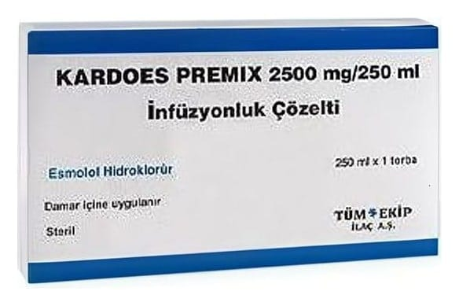

Kardoes Premix 2500 mg/250 ml İnfüzyonluk Çözelti (Blocard), 1 Adet

Ne için kullanılır
KT · Bölüm 1KARDOES 250 ml’lik torbada 2,5 g esmolol hidroklorür içeren infüzyonluk (damardan verilen) çözeltidir. Her kutu içinde bir adet 250 ml’lik torbada berrak, renksiz ila açık sarı renkte infüzyonluk çözelti bulunur. Bu ilaç seyreltilmeden damar içine uygulanır.
Bu ilaç ‘beta blokörler’ adı verilen bir ilaç grubuna dahildir. Etkisini kalp atım kuvveti ve hızını kontrol ederek gösterir. Ayrıca kan basıncınızın düşmesine de yardımcı olabilir.
Aşağıdaki hastalıkların tedavisinde kullanılır: • Kalp atış sorunları, kalbiniz çok hızlı attığında, • Kalp atışı sorunları ve bir ameliyat sırasında veya ameliyattan hemen sonra kan basıncında bir artış meydana gelirse.